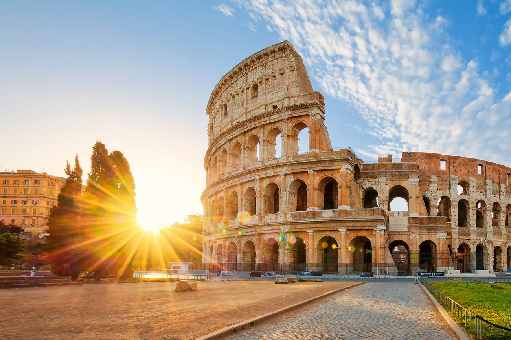
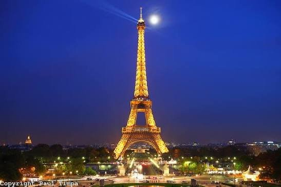
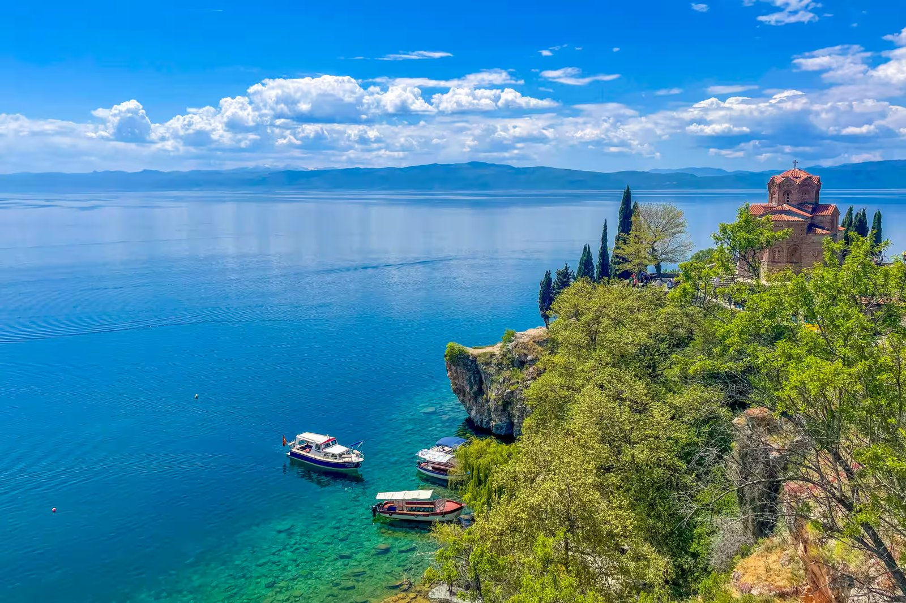
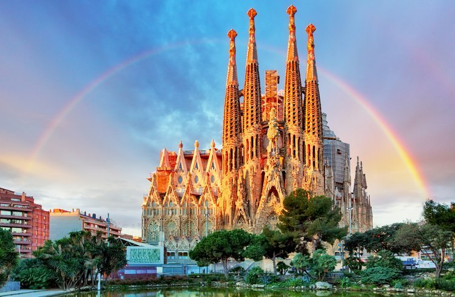
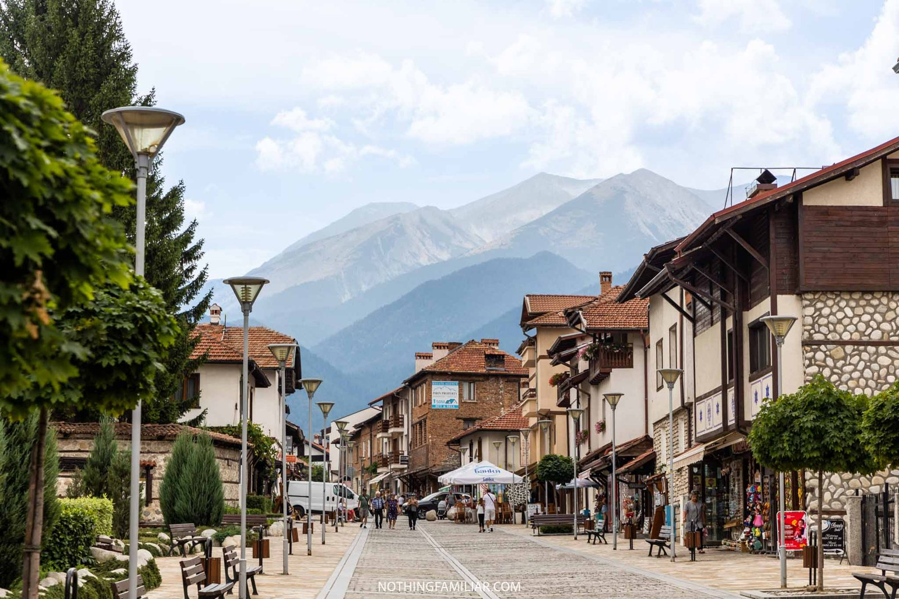
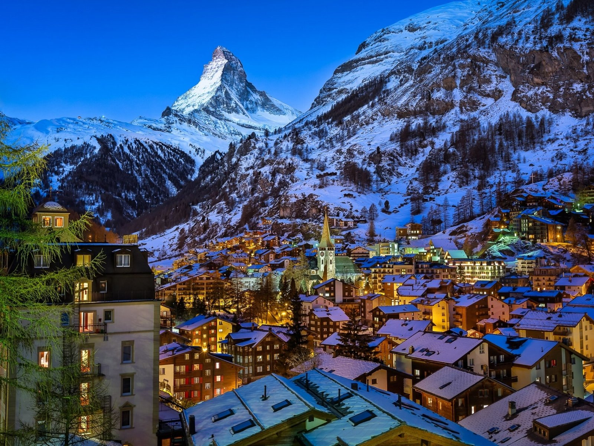

Блог и водичи
Избери град: Рим | Париз | Охрид | Барселона | Банско | Цермат

10 работи кои мора да ги видите во Рим
- Колосеумот – најпознатиот амфитеатар во светот, каде се бореле гладијаторите.
- Ватикан и Сикстинската капела – најмалата држава во светот со фреските на Микеланџело.
- Фонтаната ди Треви – фрлете паричка преку рамо за повторно да се вратите во Рим.
- Пантеонот – храм стар речиси 2000 години со отвор на куполата.
- Шпанските скали – одлично место за одмор и фотографии.
- Римскиот форум – центарот на стариот Рим со урнатини од храмови.
- Пјаца Навона – плоштад со три фонтани и улични уметници.
- Трастевере – населба со тесни улички и ресторани.
- Вила Боргезе – голем парк со галерија на уметнини.
- Италијанска пица и џелато – вистинската римска храна мора да се проба!

10 работи кои мора да ги видите во Париз
- Ајфеловата кула – симболот на Париз, најубава навечер кога свети.
- Лувр – најпознатиот музеј во светот, дом на Мона Лиза.
- Нотр Дам – готска катедрала на островот Сите.
- Монмартр и Сакре Кер – уметничка населба на рид со поглед на целиот град.
- Елисејски полиња и Триумфалната капија – најпознатата улица во Париз.
- Музејот Орсе – слики од Моне, Ван Гог и други импресионисти.
- Крстарење по Сена – Париз гледан од брод, особено навечер.
- Версај – раскошната палата на француските кралеви, близу Париз.
- Латинската четврт – студентски дел со кафулиња и книжарници.
- Луксембуршката градина – мирен парк за прошетка и одмор.

10 работи кои мора да ги видите во Охрид
- Св. Јован Канео – црквата на карпа над езерото, најфотографираното место во Охрид.
- Самуиловата тврдина – тврдина на врвот на градот со поглед на целото езеро.
- Античкиот театар – театар стар повеќе од 2000 години, и денес се користи за настани.
- Плаошник – црквата Св. Климент и Пантелејмон, првиот словенски универзитет.
- Св. Софија – стара црква со прекрасни фрески.
- Св. Наум и изворите – манастир покрај езерото и возење со чамец низ изворите.
- Заливот на коските – музеј на вода, реконструирана населба од праисторијата.
- Старата чаршија – прошетка, кафе и сувенири.
- Охридските бисери – традиционален накит што се прави само во Охрид.
- Националниот парк Галичица – планина меѓу Охридското и Преспанското Езеро.

10 работи кои мора да ги видите во Барселона
- Саграда Фамилија – огромната базилика на Гауди што се гради повеќе од 140 години.
- Парк Гуел – шарен парк со мозаици и поглед на градот.
- Каса Батљо – куќа на Гауди со фасада што личи на змеј.
- Каса Мила (Ла Педрера) – зграда со брановити ѕидови и необичен покрив.
- Ла Рамбла и пазарот Бокерија – најпознатата улица и пазар со свежо овошје.
- Готската четврт – стариот дел на градот со тесни улички.
- Плажата Барселонета – море и сонце во самиот град.
- Монжуик и Магичната фонтана – рид со музеи и фонтана што навечер свети.
- Камп Ноу – стадионот на ФК Барселона.
- Музејот Пикасо – дела од младиот Пикасо.

10 работи кои мора да ги видите во Банско
- Ски-центарот и гондолата – едно од најдобрите скијалишта на Балканот.
- Стариот град – камени куќи и калдрмисани улици.
- Црквата Св. Троица – најголемата црква во градот со висока камбанарија.
- Националниот парк Пирин – планина под заштита на УНЕСКО.
- Врвот Вихрен – највисокиот врв на Пирин (2914 m), за планинари.
- Бајкушевата мура – бор стар повеќе од 1300 години.
- Куќата на Неофит Рилски – музеј во старата куќа на познатиот учител.
- Механите – традиционални кафеани со домашна храна и музика.
- Термалните бањи – топли минерални извори во околината.
- Џез фестивалот – летен фестивал во август на главниот плоштад.

10 работи кои мора да ги видите во Цермат
- Матерхорн – најпознатиот врв на Алпите, видлив од целото село.
- Горнерграт – возење со планински воз до поглед на 29 врвови.
- Глечерскиот рај – лифт до 3883 m, највисоката жичарница во Европа.
- Езерото Лајзе – Матерхорн се огледува во водата.
- Патеката на петте езера – прошетка покрај пет планински езера.
- Клисурата Горнер – дрвени патеки над брзата река.
- Музејот Матерхорн – историјата на искачувањата на врвот.
- Банхофштрасе – главната улица со продавници и ресторани.
- Скијање цела година – на глечерот се скија и во лето.
- Село без автомобили – низ Цермат се возат само мали електрични возила.